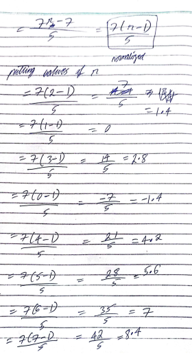
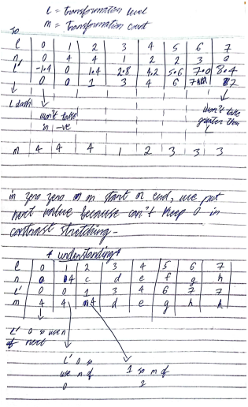
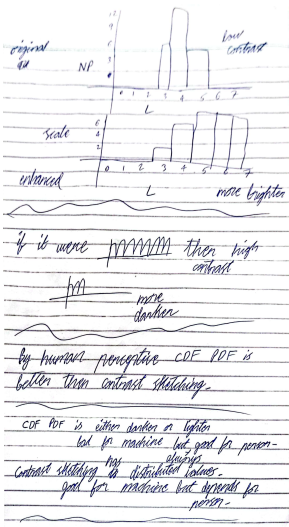
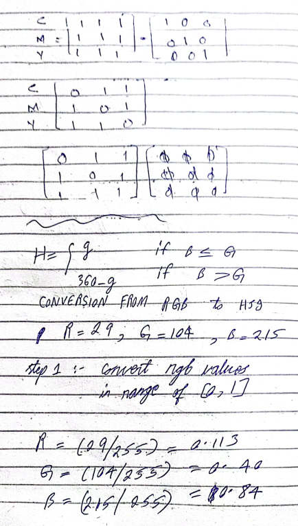

Dec 14th, 2023
Last topic of Spatial Domain and uses Global Operations
range [0,255] will be [0,1] in histograms.
segmentation?
bins nearer to 0 are dark and nearer to 1 are bright. In between are low contrast image and are present only at mid. If bins start from the left and end at right, they are high contract images.
if we remove all pixels from the image, no pixel is left so the image is going to be dark image. #0
histogram can also be used in enhancements...
it has two types contrast sketching and CDF PDF Method...
Formula:-
S=T(r) = (r-rmin)(L / rmax - rmin), where r is pixel selected, L is the highest grey level, r min means the smallest possible pixel and r max mins the highest possible pixel in the given image.
if the graph goes up, it is monotonically increasing or bright
if the graph goes down, it is monotonically decreasing or dark
we can either be given with the image and we have to make the table to begin or if we are given with just the table, then no need to make the image.
| L | 0 | 1 | 2 | 3 | 4 | 5 | 6 | 7 |
|---|---|---|---|---|---|---|---|---|
| n | 0 | 4 | 4 | 1 | 2 | 2 | 3 | 0 |
2 1 2 1
4 5 5 6
3 3 1 4
6 2 1 6
r min = 1, r max = 6
L = 23=8 or (0-7) so we will write the highest value i.e. 7
putting values in the formula:-
S = T(r) = (r-rmin)(L / rmax - rmin)
S = T(r) = (r-1)(7 / 6-1) = (r-1)(7/5) = 7(r-1) / 5 which is going to be the normalized formula and we will use this formula for all the pixels present in the image.

| L (Transformation level) | 0 | 1 | 2 | 3 | 4 | 5 | 6 | 7 |
|---|---|---|---|---|---|---|---|---|
| n (frequency) | 0 | 4 | 4 | 1 | 2 | 2 | 3 | 0 |
| L` (L prime) | -1.4 | 0 | 1.4 | 2.8 | 4.2 | 5.6 | 7.0 | 8.4 |
| now, we will round off to the nearest, values in negative will become zero, and values greater than the scale [0,7] will become 7. | ||||||||
| 0 | 0 | 1 | 3 | 4 | 6 | 7 | 7 | |
| m (Transformation count) | 4 | 4 | 4 | 1 | 2 | 3 | 3 | 3 |

contrast sketching has values distributed all over the table which is good for the machine but depends for the human sight. sometimes it is good, sometimes it is bad but it is always bad as compared to CDF PDF method.
the images processed by this method are more prominent and advanced as compared to contrast sketching. unlike contrast sketching which uses min max values of the pixel, it affects the whole image.
4 4 4 4 4
3 4 5 4 3
3 5 5 5 3
3 4
| Levels | No. of Pixels | PDF = No. of Pixels / total number of pixels | CDF Sn (first derivative or adding next value of PDF to CDF) | Sn * Max L (Equalization) | Scale (round of) |
|---|---|---|---|---|---|
| 0 | 0 | 0 / 0 = 0 | since PDF = 0 so 0 | 0 * 7 = 0 | 0 |
| 1 | 0 | 0 | 0 + 0 = 0 | 7 * 0 = 0 | 0 |
| 2 | 0 | 0 | 0 | 0 | 0 |
| 3 | 6 | 6/25 = 0.04 | 0 + 0.24 = 0.24 | 0.24 * 7 = 1.68 | 2 |
| 4 | 14 | 14 / 25 = 0.56 | 0.56 + 0.24 = 0.8 | 5.6 | 6 |
| 5 | 5 | 0.2 | 1 | 7 | 7 |
| 6 | 0 | 0 | 0 + 1 = 1 | 7 | 7 |
| 7 | 0 | 0 | 1 | 7 | 7 |
| Total (n) | 25 |
images processed by CDF PDF are either darker or brighter which is bad for the machine but always good for the sight of the human.

Dec 21st, 2023
Fourier Series:- Sum of sines and cosines
Fourier Series and transform are interchangeably used in the slides and represent frequency domain.
X-Axis | Sines | Real Part
Y-Axis | Cosines | Imaginary Part
We transform images in spatial domain to frequency domain using fourier series to make the actions faster.
We, human can't see an image in frequency domain as its in a form of wave.
However, we can observe images in spatial domain (x,y) which is a 2-D plane.
all modern and fast filters are in frequency domain.
images * constant = highboosting and it scales the images.
ORIGIN SHIFT TO THE CENTER (Short Question)
increase in distance increases the repetition of lines.
PROPERTIES OF FOURIER TRANSFORM (imp)
impact of change in spatial domain can be seen in frequeny domain and vice versa.
#ORTHOGONAL
FILTERING USING FOURIER TRANSFORM
lowpass filter => blur / smoothing
highpass filter => sharperning effect
Convolution method:- moving a mask / window throughout the image to make a change in the image (like local) but frequncy domain is a global.
IDEAL LOW PASS FILTER
keep it 0 to stop bright light and let dark pass keep it 1 to stop dark light and let bright pass #INVERSE ringing effect is its disadvantage whenever blur happens at a certain range.
BUTTERWORTH LOW PASS FILTER
it has comparatively low ringing effects and has variations unlike low pass filter which is either 0 or 1.
GAUSSIAN LOW PASS FILTER
it doesn't give any ringing effect and is most flexible of them all.
Dec 28th, 2023
Quiz in next class... (histogram + frequency domain + noise)
Difference between fourier series and fourier transform?
what is the impact of high frequency and low frequency?
if frequency of image is too high, the edges are sharped and yet we have to enhance the image, we use unsharp masking and low pass filter which help reduce the frequency.
the sources of noise can be image acquisition and image transmission.
what are the models of noise?
noise having soem graphs like y starts with 0. actual shape is available in the slides.
always starts with x = 0, shape in the slides.
the blacks are at left and white are kept at right
what is white line?
periodic noise is at acquisition level. periodic noise (dots) can be called as
unipolar noise which is used in salt and pepper but we'll remove dots by using median filter.
harmonic filter is good for salt noise.
geometric filter is good for pepper nosie.
both salt and pepper (bright and dark) noise can't be fixed at a time, but we often use geometic filter to fix both at once. they influence both of them. in cases when we don't have enough time or the enhancement isn't that much important.
how to remove salt noise in contra-harmonic mean filter? Q < 0
when contra harmonic filter = arithmetic mean filter? Q = 0
why contra harmonic filter is considered as flexible?
it let us use for various purposes when changing the values in a specific way. it can help remove both salt and pepper noise (one at a time).
what is the order of removal of noise?
at first we remove salt (bright) noise and then pepper (dark) noise.
Jan 18th, 2024
The Primary colors of lights are red, green and blue.
the seconary colors of light are magenda, cyan and yellow.
printer uses pigments
RGB can't produce black as values 0 means no need to throw the ink.
RGB = white = additive
MCY = black = subtractive

